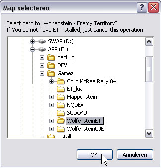
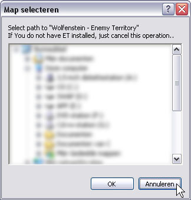
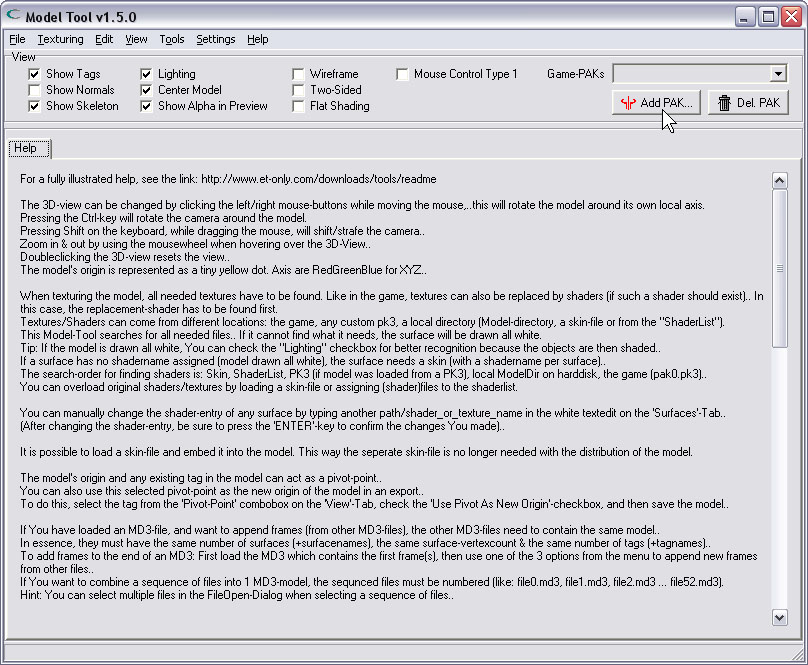
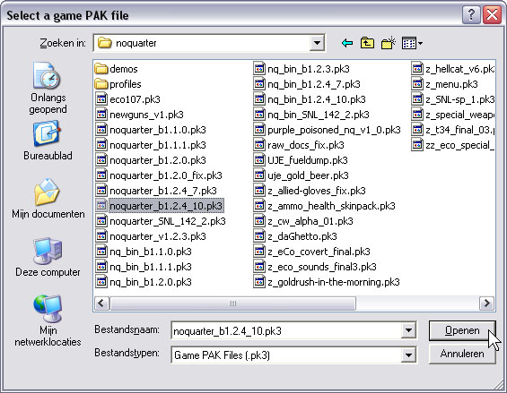
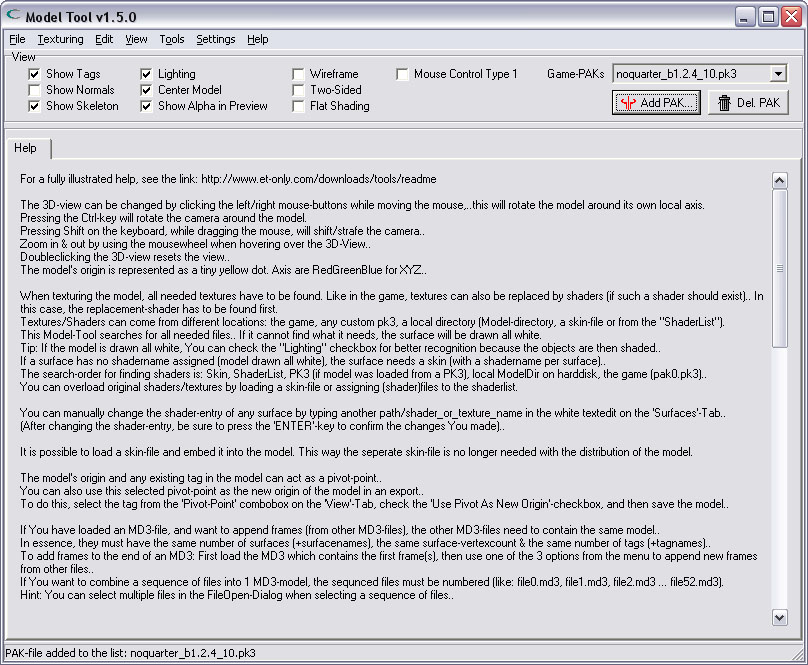
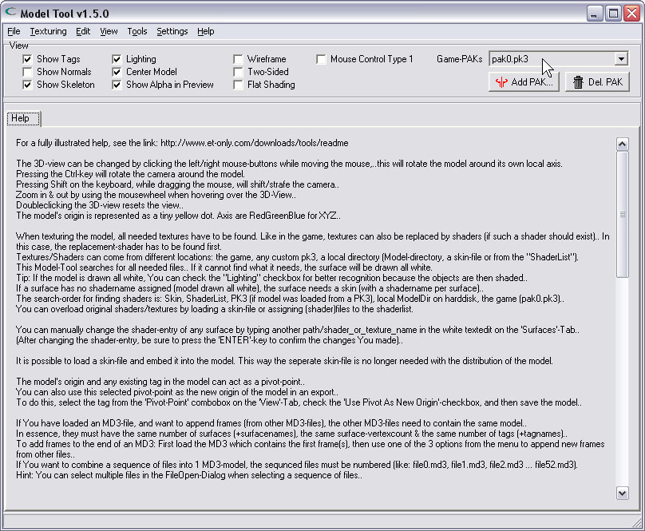
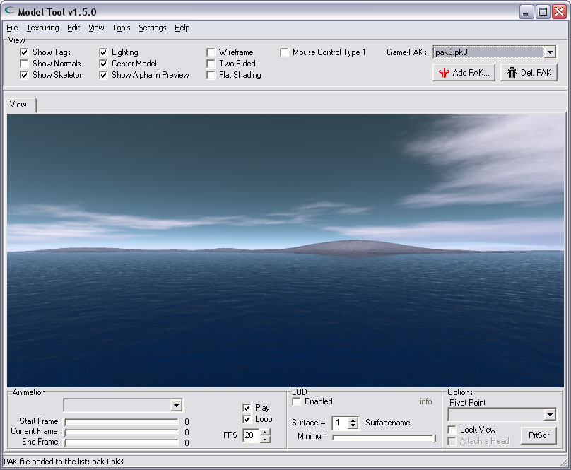

| Installing the tool | |
| The tool is distributed as a zip-file. The zip-file contains the program-executable and a folder containing the images used as the initial skybox background. The installation of the tool is really quite simple: Just unpack the zip content into a folder of Your choice.. | |
| Setting up the tool | |
| Once the tool is unpacked, run the program. When You run it for the first time, You will get a dialog-window asking for the location of Your "Wolfenstein - Enemy Territory" folder. If You have this game installed, select the folder, and click the 'OK'-button. If You do not have Wolfenstein-ET installed, then simply ignore the dialog, and press the 'Cancel'-button. | |
| The next image shows a computer where in fact multiple versions of Wolfenstein-ET are installed. I just select one of the folders, and click 'OK'. | |
|  | |
| When You do not have Wolfenstein installed on Your computer, click 'Cancel' to continue. | |
|  | |
| When providing the tool with the game-folder of Wolfenstein-ET, the actual needed PAK-file of that game is added to the list of used PAK-files. The tool searches through all these listed PAK-files when looking up textures/shaders/models. | |
| Adding game PAK-files | |
| After acknowledging or canceling the first dialog, the program window will appear. When You provided a game-folder, there should be a PAK-file in the 'Game-PAKs'-list on the upper-right of the tool-window. If You did not provide an initial game-folder, the 'Game-PAKs'-list is still empty. In this case You should manually add any game-PAKs to the list. Click the 'Add PAK'-button to add a pak-file from Your own game. In Quake3 games, a pak file usually has the .pk3 extension, and its filename is something like pak0.pk3, pak1.pk3 or such alike.. | |
|  | |
| Selecting a game PAK-file | |
| In this example, i selected a PAK-file of the NoQuarter MOD. Click the 'Open'-button when done selecting the PAK-file. | |
|  | |
| A PAK-file has been added to the list | |
| As You can see, the PAK-file has been added to the 'Game-PAKs'-list on the upper-right of the window. | |
|  | |
| Adding more PAK-files | |
| You can add more PAK-files if You like. Just keep in mind that it will not make the tool faster, because it has to search all these files when looking for textures, shaders and/or models.. Another point to be aware of, is that the files are searched from top-to-bottom as they appear in the list. So if, for example, the same shader should exist in more than one listed PAK-file, only the first found entry will be used while rendering/converting models. | |
|  | |
| Ready for use | |
| When You are done adding PAK-files, You can start using the tool. You can click the displayed, simple help (anywhere), to make it disappear, and to make the 'View'-Tab show up. Most important settings are saved on exit in an INI-file, including the PAKs-list. You only need to setup the tool once. At any time You can add (or remove) PAKs from the list. | |
|  | |